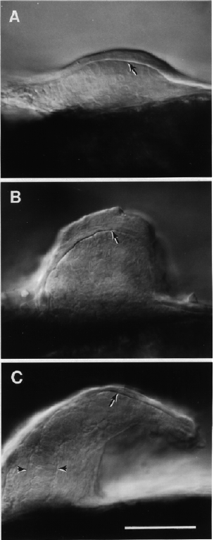

Modified from: Kimmel et al., 1955. Developmental Dynamics 203:253-310. Copyright © 1995 Wiley-Liss, Inc. Reprinted only by permission of Wiley-Liss, a subsidiary of John Wiley & Sons, Inc.
Fig. 37. Morphogenesis of the pectoral bud during the late pharyngula period. Left side Nomarski views from the ventrolateral aspect of the embrytshow the bud in relief. Dorsal is to the top, anterior is to the left. Arrows indicate the boundary between the bud's surface epithelium and inner mesenchyme. A: prim-18 stage (32 h). The bud is now symmetrical in outline, a shallow dome with a height less than 1/3 of its width. The common cardinal vein passes just anteriorly, beneath the epithelium. B: Prim-25 stage (36 h). The bud's height is now about 3/4 its width. Its posterior face (the right) is relatively steeply angled. The focus is along the prominent apical ectodermal ridge, crossing the bud distally. C: Long-pec stage (48 h), The bud curves posteriorly and tapers, tgive a pointed appears from this viewpoint; its length along the proximal-distal axis is about twice the width of its base. An innermost precartilage core has now begun to differentiate within the mesenchyme (arrowheads). Scale bar: 50 µm.

Figure 37